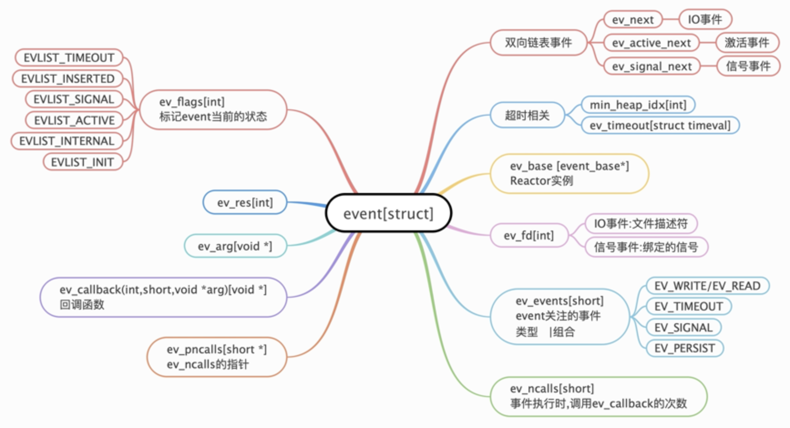
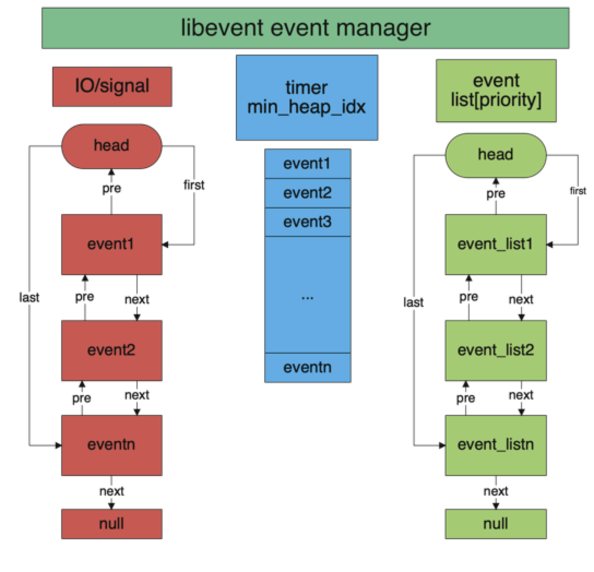

libevent是一个C语言编写的轻量级的跨平台的高性能网络库，它基于事件驱动的Reactor模式，支持多种I/O复用技术，目前已被广泛使用。了解其原理、研究其源码是非常有意义和价值的，本文首先介绍几种常见的I/O模型，由此引出libevent并剖析其源码,希望能和读者一起提升网络相关的技能。
[toc]
基础知识
I/O多路复用
进程需要一种预先告知内核的能力，使得内核一旦发现进程指定的一个或多个I/O条件就绪(也就是说输入已准备好，或者描述符已经承接更多的输出)，它就通知进程，这种能力称为I/O复用。IO多路复用是一种同步IO模型，实现一个线程可以监视多个文件句柄；一旦某个文件句柄就绪，就能够通知应用程序进行相应的读写操作；没有文件句柄就绪时会阻塞应用程序，交出cpu。多路是指网络连接，复用指的是同一个线程。
用户空间和内核空间
现在操作系统都是采用虚拟存储器，那么对32位操作系统而言，它的寻址空间（虚拟存储空间）为4G（2的32次方）。操作系统的核心是内核，独立于普通的应用程序，可以访问受保护的内存空间，也有访问底层硬件设备的所有权限。为了保证用户进程不能直接操作内核（kernel），保证内核的安全，操心系统将虚拟空间划分为两部分，一部分为内核空间，一部分为用户空间。针对linux操作系统而言，将最高的1G字节（从虚拟地址0xC0000000到0xFFFFFFFF），供内核使用，称为内核空间，而将较低的3G字节（从虚拟地址0x00000000到0xBFFFFFFF），供各个进程使用，称为用户空间，如图2所示。这里还有一个比较重要的概念，叫DMA（Direct Memory Access直接存储器访问），它的作用是处理各种I/O，包括网络I/O和磁盘I/O。CPU是不会直接处理I/O的，这是因为CPU非常宝贵，而I/O是比较耗时的，如果CPU一直等待某一次I/O事件完成，会带来极大的浪费，且性能会急剧下降，因此需要一种机制能够完成I/O，并通知CPU，DMA即是这个角色。
- 等待数据准备
- 将数据从内核空间拷贝到进程中
Linux两大类网络模型
- 同步I/O
阻塞I/O
非阻塞I/O
I/O多路复用
信号驱动I/O
- 异步I/O
同步I/O和异步I/O主要区别在于： 用户进程在发起I/O操作之后可以立刻去做其他事情，数据拷贝由硬件拷贝到内核空间、从内核空间拷贝到用户空间都不阻塞，这种就是异步I/O；两个步骤中有任何一步发生阻塞，就是同步I/O。
I/O多路复用
select
函数原型
1
2
3
4int select (int nfds, fd_set * readfds,
fd_set * writefds,
fd_set *exceptfds,
struct timeval *timeout);参数介绍
参数名称 类型 含义 nfds int 文件描述符最大值+1 readfds fd_set * 读事件文件描述符集合 writefds fd_set * 写事件文件描述符集合 exceptfds fd_set * 异常事件文件描述符集合 timeout timeval * 超时时间，超过该时间即使没有事件到达，select也会返回，避免无休止地等待 read事件代码
1
2
3
4
5
6
7
8
9
10
11
12
13
14
15
16
17
18
19
20
21
22
23
24
25
26
27
28
29
30
31
32
33
34sockfd = socket(AF_INET, SOCK_STREAM, 0);
memset(&addr, 0, sizeof (addr));
addr.sin_family = AF_INET;
addr.sin_port = htons(2000);
addr.sin_addr.s_addr = INADDR_ANY;
bind(sockfd,(struct sockaddr*)&addr ,sizeof(addr));
listen (sockfd, 5);
for (i=0;i<5;i++)
{
memset(&client, 0, sizeof (client));
addrlen = sizeof(client);
fds[i] = accept(sockfd,(struct sockaddr*)&client, &addrlen);
if(fds[i] > max)
max = fds[i];
}
// ####################################################################
while(1){
FD_ZERO(&rset); // 1. 初始化/重置rset
for (i = 0; i< 5; i++ ) {
FD_SET(fds[i],&rset); // 2. 为rset赋值
}
// 传入最大描述符数量加1
select(max+1, &rset, NULL, NULL, NULL); // 3. select阻塞
for(i=0;i<5;i++) {
if (FD_ISSET(fds[i], &rset)){
memset(buffer,0,MAXBUF);
read(fds[i], buffer, MAXBUF);
puts(buffer);
}
}
}
return 0;select 底层机制
内核会将传入的rset由用户态拷贝到内核态，然后在内核中判断每一个置位的rset是否有数据到达（将rset拷贝到内核态是因为在内核中判断是否有数据到达比在用户态判断效率高很多），如果有，则标记这一位，如果没有，继续往后判断，除非到达select的超时时间，所以select是一个阻塞的函数。select函数中第一个参数nfds有什么用呢？select在对rset遍历时，会截取0~nfds，因为大于nfds是不会有文件描述符的；当select函数返回时，循环遍历这5个文件描述符，然后检测每一个文件描述符是否被标记，如果标记了，说明有read事件发生，则读取缓存中的数据。这里需要注意某一个文件描述符是否有数据是随机的，可能有多个文件描述符同时有数据到达，因此需要执行for遍历每一个文件描述符。
- select存在的问题
- len(rset)=1024,所以最多只能监听1024个文件描述符。这个是操作系统进行的限制，虽然可以更改，但是有上限；
- rset不可重用。从代码中可以看到，每次循环时，都需要调用FD_ZERO(&rest)，重置rset，这是因为内核检测是否有数据时会更改rset，如果不重置，上一次select返回的结果会对下一次内核判断某一个文件描述符是否有数据产生影响；
- 解除select阻塞后需遍历每一个fd。这是因为内核判断是否有数据后会直接返回，但是并没有返回究竟是哪一个文件描述符有数据。
poll
函数原型
1
2
3
4
5
6
7int poll (struct pollfd *fds, unsigned int nfds, int timeout);
struct pollfd {
int fd;
short events; // 用户感兴趣的事件
short revents; // 系统触发的事件
};参数介绍
参数名称 类型 含义 fds pollfd * 文件描述符数组，和select不同，fds中每一个元素不是一个数字，而是pollfd类型 nfds unsigned int 监听的文件描述符数量 timeout int 超时时间，含义和select中timeout类似 poll使用代码
1
2
3
4
5
6
7
8
9
10
11
12
13
14
15
16
17
18
19
20
21for (i=0;i<5;i++)
{
memset(&client, 0, sizeof (client));
addrlen = sizeof(client);
pollfds[i].fd = accept(sockfd,(struct sockaddr*)&client, &addrlen);
pollfds[i].events = POLLIN;
}
sleep(1);
// ######################################################################
while(1){
poll(pollfds, 5, 50000);
for(i=0;i<5;i++) {
if (pollfds[i].revents & POLLIN){
pollfds[i].revents = 0;
memset(buffer,0,MAXBUF);
read(pollfds[i].fd, buffer, MAXBUF);
puts(buffer);
}
}
}poll原理
poll的原理和select非常类似，也是将pollfds拷贝到内核空间。不同的是，当内核判断某个pollfd有数据时，会将pollfd.revents置位，然后解除poll的阻塞。因此，for中遍历每一个pollfd先检测该文件描述符是否被置位，如果是说明有数据，则将置位的revents恢复成默认，随后读取该数据。poll存在的问题
poll解决了select中rset无法重用的问题，通过自定义的pollfd结构，巧妙地完成了”置位-恢复”的操作；而且，poll中文件描述符不是一个数字而是pollfd结构，可以监听更多的文件描述符，也就突破了select中len(rst)=1024的限制，
但是也存在一个问题：poll解除阻塞后依旧需要循环遍历所有的pollfds，然后才知道具体哪一个文件描述符有数据
epoll
epoll在poll的基础上，通过双向链表的结构，解决了poll中存在的问题，接下来看epoll的具体实现
1 | struct epoll_event events[4]; |
- epoll的三个主要函数
1
2
3int epfd = epoll_create(10); // 这里的参数10没有什么意义，事实上，通过源码可以知道这里只要传入一个正数就OK
epoll_ctl(epfd, EPOLL_CTL_ADD, ev.data.fd, &ev);
nfds = epoll_wait(epfd, events, 4, 10000);三个函数对应的步骤:
- 生成epoll面板epfd（epoll_create函数的功能，对应图5中的橙黄色部分）
- 在 epfd中将文件描述符和事件绑定（epoll_ctl函数的功能，对应图中的fd[x]–>events）
- 阻塞并监听文件描述符（epoll_wait函数的功能）
内核空间部分是如何处理的，当某一个文件描述符有数据到达时，内核空间会将该文件描述符调整到最前面，且nfds+1，对应图中绿色部分，表示fd3和fd2有数据，此时nfds=2，解除epoll_wait函数的阻塞并返回nfds的值。在for进行遍历时，只需要遍历0~nfds即可，也就解决了select和poll中需要遍历整个文件描述符数组的问题。
- epoll的触发机制
- 边缘触发（edge triggered ET）
对于边缘触发，
epoll_wait()只返回一次，即只在该读写事件发生时返回，也就是说如果事件处理函数只读取了该文件描述缓冲区的部分内容时返回，再次调用epoll_wait()，虽然此时该描述符对应缓冲区中还有数据，但epoll_wait()函数不会返回。 - 水平触发（level triggered LT）
对于水平触发，它不管是否有事件反生，只要文件描述符对应的缓冲区中有数据可读写，epoll_wait()就会返回。
Reactor模式
本节将介绍Reactor模式，它是libevent的核心，因此有必要对其进行介绍，有了上文中select、poll、epoll的基础，Reactor模式就比较好理解了。 Reactor释义”反应堆”（中文翻译的名称和它的功能几乎没有什么联系，因此下文还是采用英文名），Reactor模式的是一种基于事件驱动的异步回调机制。一般的函数调用是压栈式调用，函数之间调用需要同步等待，而Reactor模式不同，应用程序提供相应的接口并注册到Reactor上，如果相应的事件发生，Reactor将主动调用应用程序注册的接口（也就是回调函数）。所以，上文中的select、poll、epoll其实都是Reactor模式。
- 代码框架
1
2
3
4
5
6
7
8
9
10
11
12
13
14
15class Reactor
{
public:
int register_handler(Event_Handler *pHandler, int event);
int remove_handler(Event_Handler *pHeadler, int event);
void handle_event(timeval *ptv);
}
class Event_Handler
{
public:
// events maybe read/write/tiomeout .etc
virtual void handle_events(int events) = 0;
virtual HANDLE get_handle() = 0;
} - Reactor组件
- 事件源(图中的handle)
在linux系统中是文件描述符，在window上是socket或Handle，下文统称为”句柄”
- 事件多路分发机制(图中的Event Demultiplexer)
由操作系统提供的I/O多路分发机制，比如上文所述的select、poll、epoll
- 反应器(图中的Reactor)
Reactor模式中的事件管理接口，提供注册、注销事件和事件循环，它的声明参见代码中的class Reactor
- 事件处理程序(图中的Event_Handler和Concrete_Event_Handler)
包括抽象处理程序和具体处理程序，主要是考虑扩展性，它的声明参见class Event_Handler
Libevent
libevent定时器实现
- 代码实例
1
2
3
4
5
6
7
8
9
10
11
12
13
14
15
16
17
18
19
20
21
22
23
24
25
26
27
28struct event ev;
struct timeval tv;
void time_cb(int fd, short event, void *args){
printf("timer wakeup\n");
event_add(&ev, &tv); // reschedule timer
}
int main(){
// 1. 初始化libevent,相当于初始化Reactor实例
struct event_base *base = event_init();
tv.tv_sec = 10; // 10s period
tv.tv_usec = 0;
// #define evtimer_set(ev, cb, arg) event_set(ev, -1, 0, cb, arg)
// evtimer_set 也是event_set
// 2. 初始化时间event,设置回调函数和关注的事件
evtimer_set(&ev, time_cb, NULL);
// 3. 设置event从属的event_base
event_base_set(base, &ev);
// 4. 正式添加事件
event_add(&ev, &tv);
// 5. 等待事件就绪,阻塞
event_base_dispatch(base);
}
libevent源码分析
事件event结构
 - 双向链表事件（使用双向链表结构保存了event的所有事件） -- event_next（保存所有已注册的I/O事件） -- ev_signal_next（保存所有已注册的信号事件） -- ev_active_next（保存所有已激活的事件，激活的含义就是文件描述符有数据） - ev_base（该事件所属的Reactor实例，是一个event_base的指针，关于event_base，后面将详细介绍） - ev_events（它是event关注的事件类型，有多种取值，且可以"|"组合，比如"EV_ERAD|EV_PERSIST",当然，定时器事件不能和I/O事件组合在一起，可以考虑下这是为什么）  libevent事件管理的结构，左侧红色部分表示I/O事件和signal的结构，它们都是由若干事件组成的双向链表，图中把它们画在一起是因为它们结构相同，但实际上它们是两个双向链表；中间蓝色部分表示时间事件，时间事件在底层是一个以超时时间为key的小根堆，由于libevent需要频繁获取最近的时间事件，因此采用小根堆存储，小根堆在底层是用数组实现的；右边绿色部分表示激活事件的结构，它的底层也是双向链表，但它与I/O事件的双向链表不同，它是根据事件的priority进行排序的，优先级高的在前面，优先被执行。因此，有可能出现优先级比较低的事件一直得不到执行。libevent提供了设置事件优先级的api，如果不设置，会给一个默认的优先级。事件接口函数
1 | // 事件设置接口函数 |
事件处理框架
- event_base框架
接口函数
libevent提供的对于事件的注册、注销以及当事件处于激活状态时调用回到接口的api如下。
1 | int event_add(struct event *ev, const struct timeval *timeout); |
event_add 函数介绍:
1 | int event_add(struct event *ev, const struct timeval *tv){ |
事件循环
事件循环是libevent非常重要的一部分，它的主要职责就是阻塞等待事件到来并调用事件绑定的回到函数。
- 事件循环的逻辑结构
1 | int event_base_loop(struct event_base *base, int flags) |
libevent函数的一大亮点就是将I/O和timer事件统一起来了，这里就有个疑问，为什么将IO事件的timeout设置为所有定时器事件的最小时间，就能将timer事件完美融合到系统IO机制中？原因是timer事件主要目标是定时器到期后需要触发一个回调，IO机制是已经激活的event才会触发回调函数，所以，只要有一种机制可以将到期的timer放到激活链表中就可以。libevent将IO事件的timeout设置为定时器事件的最小时间，那么当IO事件激活时，从timer堆中取出最小的timer判断是否到期，如果到期将其也放入激活链表中；如果IO时间在timeout内没有激活,则会触发超时，此时也检查最小的timer是否到期，这样就能将timer事件很好地放到激活事件中。也就实现了将I/O和timer事件统一起来。